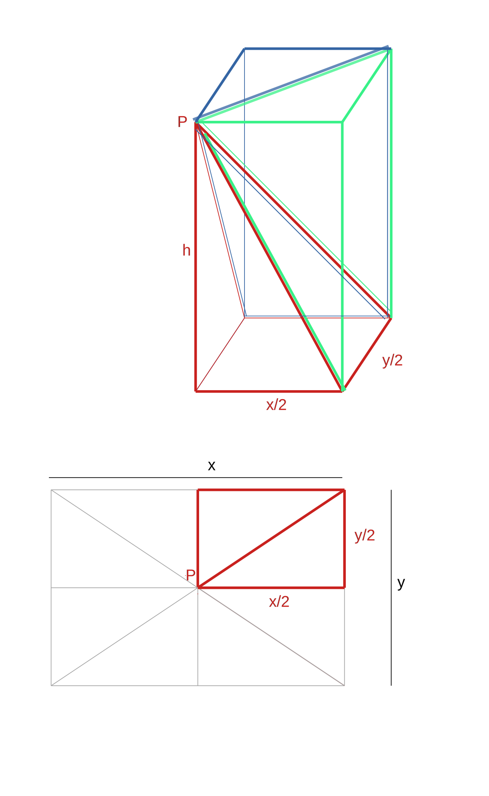
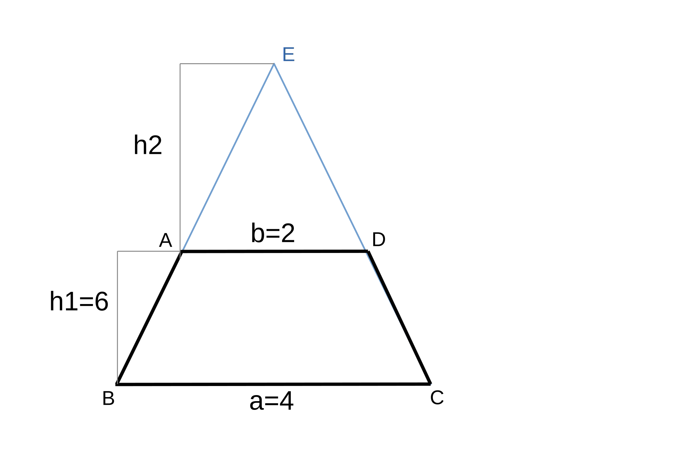
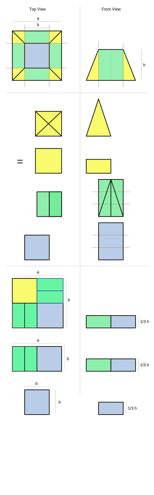

The ancient Egyptians new that the volume of a pyramid is:
Speculation regarding how they knew includes:
- experimentation with filling rectanular prism shaped containers with pyramid shaped ones or
- disection of rectangular prisms
Derivation By Disection

- area of rectangular prism = x/2 y/2 h
- rectangular prism can be divided into 3 congruent pyramids[1]
- the pyramids from 4 such retangular prisms can be joined to form 3 retangular pyramids which have base x * y and height h
- the total area of the 4 rectangulr prisms = xyh = total area of 3 pyramids
- ∴ area of each rectangular pyramid with base xy and height h = 1/3 base * height
Volume of Truncated Pyramid
1/3h * (a2 + ab + b2)
Algebraical Derivation

- = volume of complete pyramid - volume of pyramid missing from the top
- = 1/3 (h1+h2) a2 - 1/3 h2 b2
- = 1/3 (h1 + b/(a-b) h1) a2 = 1/3 b/(a-b) h1 b2
- since:
- h2/(h1+h2) = b/a
- ∴ a * h2 = b (h1+h2)
- ∴ (a-b)h2 = b h1
- ∴ h2 = b/(a-b) h1
- = 1/3 h1 [(b-a) + b) a2 - b3]/(a-b)
- = 1/3 h1 (a3 - b3)/
- = 1/3 h1 (a2 + ab + b2
- since:
| a2 + ab + b2 |
| a-b | a3 - b3 |
| - (a3 - a2b) |
| a2b - b2 |
| - (a2b - a b2) |
| a b2 - b3 |
| - (a b2 - b3) |
| 0 |
- In the Moscow Papyrus
- ~1850 BC [2]
- like the Rhind possibly based on concepts from 2600-2500 BC when the pyramids were built)
- the Ancient Egyptians computed the volume of a truncated square pyramid with a height of 6, a base of 42 and a top surface of area b2 as:
- 1/3 6 * (42 + 4x2 + 22)
- = 2 * (16 + 8 + 4)
- = 2 * (28)
- = 56
- Their method matches the algebraic formula
- However, Algebra was not conceived of until significantly later
- throughout the Rhind Papyrus, they did use generalized methods to solve classes of problems, which could be considered to be a precursor to Algebra
- but without more rigorous Algebra it seems unlikely that the Ancient Eyptians would have reached the last step in algebraic derivation
- the volume could have determined the area of a truncated pyramid by filling pyrmaid shaped containers, it would not have resulted in this method
- therefore, it is speculated that the Ancient Egyptians used some other method such as disection to arrive as this formula
Derivation by Disection [3]
As proposed by Chinese mathematician Lui Hui (225-295)[4] for a similar problem in "Nine Chapters on the Mathematical Art" (China 1000-100 BC)[5]
- cut 3 truncated pyramids along the red lines
- ha2 is the area of the blue rectangular prism in the middle of 1 or the truncated pyramidsi (I)
- the 4 of the green wedges from 1 of the truncated pyramids can be arranged to form 2 rectangular prisms h x (b-a)/2 x a
- the 2 green rectangular prisms along with the blue one from the second trucated pyramid can be combined to form a rectangular prism h x b x a (II)
- 3 of the yellow pyramids can be arranged into a rectangular prism which is h x [(b-a)/2]2
- ∴ the 12 yellow pyramids from the 3 truncated pyramids can be arranged into 4 rectangular prisms h x (b-a)2
- the 4 yellow rectangular prisms can be combined with the 4 green h x (b-a)/2 x a rectangular prisms formed from the wedges of the second and third truncated pyramids and the blue h x a2 rectangular prism from the third truncated prism to form a rectangular prism which is h x b2 (III)
- ∴ the pieces of the 3 truncated pyramids can be rearranged into 3 rectanglar prisms: h x a2, h x a x b and h x b2
- ∴ the area of each of the truncated pyramids is:
- = 1/3 [ha2 + hab + hb2]
- = 1/3h [a2 + ab + b2]

Method of Exhaustion
volume
- = lim n->∞ ∑ k=0->n h/n (kb/n)2
- = lim n->∞ hb2/n3 ∑ k=0->n k2
- = lim n->∞ hb2/n3 (1/3n3 + 1/2n2 + 1/6n)
- = lim n->∞ hb2(1/3 + 1/(2n) + 1/(6n2)
- = hb2(1/3)
- = (1/3)hb2
References
[1] Volume of pyramids intuition. Khan Academy. Available at: https://www.khanacademy.org/math/geometry/hs-geo-solids/xff63fac4:hs-geo-cavalieri-s-principle/v/volume-of-pyramids-intuition. Accessed February 18, 2024.
[2]Wikipedia contributors. Moscow Mathematical Papyrus. Wikipedia, The Free Encyclopedia. October 28, 2023, 01:22 UTC. Available at: https://en.wikipedia.org/w/index.php?title=Moscow_Mathematical_Papyrus&oldid=1182239454". Accessed February 24, 2024.
[3] Intuitive, didactically useful, and historically possible proofs for the two Egyptian pyramid volume formulas (1850 BCE). Thoughts on the border between history and didactics of mathematics. Siegmund-Schultze, Reinhard. Cornell University,July 10, 2022. Available at: https://arxiv.org/abs/2207.04427. Accessed February 24, 2024.
[4]Wikipedia contributors. Liu Hui. Wikipedia, The Free Encyclopedia. February 17, 2024, 19:41 UTC. Available at: https://en.wikipedia.org/w/index.php?title=Liu_Hui&oldid=1208498969". Accessed February 24, 2024.
[5]Wikipedia contributors. The Nine Chapters on the Mathematical Art. Wikipedia, The Free Encyclopedia. January 5, 2024, 13:01 UTC. Available at: https://en.wikipedia.org/w/index.php?title=The_Nine_Chapters_on_the_Mathematical_Art&oldid=1193754674". Accessed February 24, 2024.